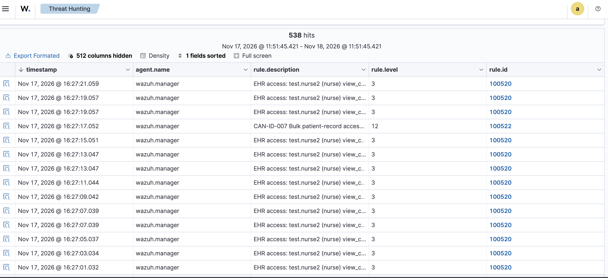

| Prepared by: | Akhila Chennamaneni, IAM & GRC Analyst (author) |
| Organization: | HealthLine Regional Medical Center (HRMC), Care Access Navigator (CAN) capstone |
| Course: | Security Operations Center 1 (DAE 6-Month Cybersecurity, Cohort 2) |
| Rubric criterion: | Criterion 1: SOC Operations Documentation |
| Environment: | Wazuh 4.9.2 single-node SIEM (manager, indexer, dashboard) in Docker; MailHog test mailbox; capstone Keycloak and EHR logs |
| Date: | November 18, 2026 |
| Category | Tool in this lab | Purpose and function |
|---|---|---|
| SIEM | Wazuh manager + indexer + dashboard | Collects logs from every source, decodes them into fields, runs detection rules, stores alerts and lets analysts search, filter and pivot. It is the single place where the SOC sees what is happening. |
| Ticketing / case management | irtrack.py (built in Incident Response 1) | Turns a confirmed alert into a case with an ID, severity, owner, status workflow (New → Triage → Contained → Eradicated → Recovered → Closed), timeline, actions, evidence and response-time targets. Nothing is “handled” unless it is in a case. |
| Alerting / notification | Wazuh maild + MailHog mailbox | Pushes high and critical alerts to people instead of waiting for someone to look at the dashboard. MailHog stands in for the hospital mail server so no real email leaves the lab. |
| Host monitoring | Wazuh agent, file integrity monitoring, auditd (IR1 lab) | Watches the endpoint itself: logins, sudo, file changes, process activity. |
| Network monitoring | Wireshark / tshark (IR1 lab) | Captures and filters traffic to confirm what an alert claims, for example where data was sent. |
| Forensics | Volatility 3, dc3dd, Sleuth Kit (IR1 lab) | Memory and disk analysis after containment, with hashes for chain of custody. |
| Identity platform | Keycloak + Microsoft Entra ID (capstone) | Source of sign-in and admin events, and the place where containment happens (disable account, end sessions). |

rule.groups:soc1): 538 hits. The dashboard shows local time (US Eastern, UTC−5), so 16:27 here is 21:27 UTC.Source: diagrams/soc_alert_workflow.mmd. Alert level decides who is told and how fast; the analyst's
severity decision (SEV-1 to SEV-4) decides who owns the case.
The SOC runs three 8-hour shifts (Day 07:00–15:00, Evening 15:00–23:00, Night 23:00–07:00) with a 15-minute overlap. Nothing is left in someone's head: every open item is in the tracker or on the handover form.
irtrack.py list; note alerts still un-triaged in the dashboard.Handover requirements (must be on every form): open cases with severity, owner and next action; escalations in progress and who was paged; un-triaged alerts; rule changes or suppressions made this shift; tool or log-source outages; pending requests to other teams (IT, Privacy Officer); anything waiting on a deadline (for example the HIPAA 60-day clock).
| Shift handover form (completed for the shift that handled SOC1-2026-001) | |
|---|---|
| Date / shift | 2026-11-17, Evening → Night |
| Outgoing / incoming analyst | Akhila Chennamaneni (Tier 1) → Night Tier 1 analyst |
| Open cases | SOC1-2026-001, SEV-1, status Contained. Next: eradication (reset password, review MFA for test.nurse2, confirm no other account used 203.0.113.45), then Privacy Officer breach risk assessment for 18 charts |
| Escalations in progress | Incident Commander and Privacy Officer paged at 21:31 UTC; IC owns containment |
| Un-triaged alerts | 9 × rule 100522 from the historical log replay: known false positives (replay compressed hours into minutes), tuning ticket raised |
| Rule / config changes | None this shift |
| Tool health | Wazuh manager, indexer, dashboard and maild running; all 4 log sources receiving; MailHog receiving |
| Deadlines | HIPAA breach assessment for SOC1-2026-001 (60-day notification clock started at discovery) |
| Sign-off | Outgoing: A. Chennamaneni · Incoming: ________ · Time: ________ |
| Phase | What the analyst does | In this lab |
|---|---|---|
| 1. Preparation | Rules, log sources, notification, playbooks and contacts are ready before anything happens | 13 SOC rules, 4 sources, email routing, playbook CAN-IR-PB-02, tracker |
| 2. Detection and analysis | Receive the alert, validate it, enrich it (who, what, where, when), decide true or false positive, set severity | Dashboard pivot on data.username and data.ip |
| 3. Containment | Stop the damage quickly without destroying evidence (short-term), then hold it (long-term) | Disable account, revoke sessions, block IP |
| 4. Eradication | Remove the cause | Reset credentials, enforce MFA, check for persistence |
| 5. Recovery | Return to normal and watch closely | Re-enable with new password + MFA; heightened monitoring 30 days |
| 6. Post-incident | Root cause, lessons learned, rule tuning, report | Case record, lessons, tuning of 100522 |